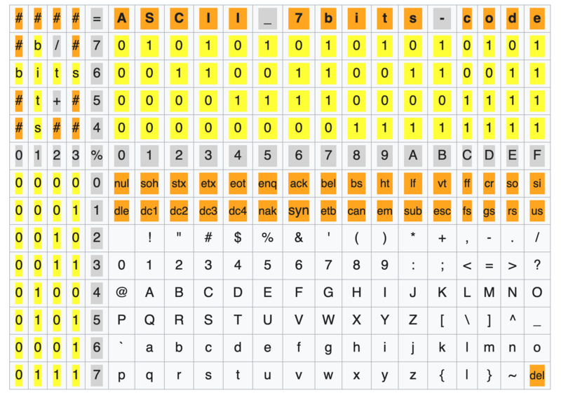

Om te kunnen werken, moeten computers informatie kunnen doorsturen van het ene component naar het andere. Dit doen ze alleen niet door middel van letters of nummers zoals wij dat gewend zijn, maar door middel van hun eigen taal: binaire code.
Binaire code bestaat uit nullen en enen, ook wel bits genoemd. Het gebruikt een string van deze bits in specifieke volgordes om informatie te verwerken. Een string van bits 8 wordt een byte genoemd.
Een voorbeeld van het gebruik van binaire code in een computer is wanneer iemand typt op zijn toetsenbord. Het apparaat registreert dan die input en zendt een signaal uit over welke toets is ingetikt, in binaire code natuurlijk.
Getallen maken met alleen nullen en enen is natuurlijk best moeilijk en beperkend. Om die reden heeft het binair stelsel een manier van tellen die anders is dan de manier waarop mensen dat gewoonlijk doen.
Het binair talstelsel werkt als volgt: in een byte representeert elke bit een andere macht van 2, oplopend van rechts naar links. De bits in een byte representeren dus de waardes 128, 64, 32, 16, 8, 4, 2 en 1 in die volgorde. Als één zo’n waarde meegeteld moet worden, toont de desbetreffende bit een 1. Als hij niet meegeteld moet worden, toont de bit een 0.
Neem nu als voorbeeld de volgende byte: 01010011. Je kunt nu met de eerder gegeven reeks uitrekenen welke waarde deze byte uitdrukt. Dat bereken je zo: 0×128+1×64+0×32+1×16+0×8+0×4+1×2+1×1= 83. 01010011 in het binaire talstelsel is dus gelijk aan 83 in ons talstelsel.
Onderaan de pagina vind je een spel om te oefenen met het binair talstelsel.
ascii uitleg
